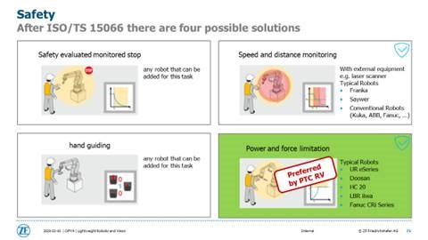
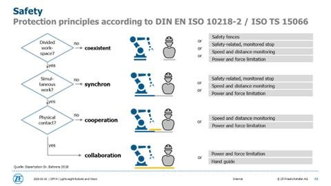

Willkommen zur ZF-Robotik
Grundlagen:
Instandhaltung:
Frage
...?
Rotationsmatrix
Die Rotation eines Körpers im Raum ist ein essentielles Thema für Ingenieure in jeglichen Bereichen. Auch auf Enzyklopedien gibt es einiges über dieses Thema heraus zu finden (Euler,Drehmatrix).
Die wissenschaftliche Theorie, die man über dieses Thema nachlesen kann, ist grenzenlos. Aber um wirklich zu verstehen was passiert, braucht man eine visuelle Veranschaulichung, damit man seine Denkweise daran anpasst.
XYZ-Konvention
Die Rotationsmatrix besteht aus 3 einzelnen Matrizen, die jeweils für Z-Rotation, Y-Rotation und X-Rotation stehen.
Multipliziert man diese Matrizen miteinander, ergibt sich die finale Rotationsmatrix.
Für den Startbildschirm, bitte Klicken.
Rechte Hand Regel
Die rechte Hand ist, wie in vielen anderen Bereichen der Technik, auch hier ein gutes Werkzeug um Koordinatensysteme schnell zu veranschaulichen.
Daumen - X-Achse
Zeigefinger - Y-Achse
Mittelfinger - Z-Achse
Drehsinn
Für den Drehsinn benutzt man auch die rechte Hand, genau wie in der Elektrotechnik. Der Daumen zeigt in Richtung des Vektors und die Richtung der anderen Finger gibt die positive Drehrichtung vor.
Für den Startbildschirm, bitte Klicken.
Koordiantensystem
In der Robotik gibt es einige Koordiantensysteme, die man berücksichtigen muss. Es gibt den Bezug zur Basis, zum TCP oder auch zu einer selbst definierten Ebene.
Diese Abhängigkeiten sollte man für jeden Fahrbefehl festlegen, damit sich der Roboter nicht auf unerwünschte Weise bewegt.
Drehen Sie immer in der Reihenfolge: 1, 2 und dann 3.
Mittels 4(x), 5(y) und 6(z) verschieben Sie den Ursprung global im Raum.
Nach Verschieben/Verdrehen des Koordinatensystems, entfernen Sie den Haken bei "kos", um das Kardan-System einzublenden.
Hier wird um die jeweilige Achse rotiert.
Getestet und funktionstüchtig unter Google Chrome(version 81.3). Es muss ES6 aktiviert sein.
Für den Startbildschirm, bitte Klicken.
TCP
Der TCP (tool center point) stellt den vordersten Punkt des Roboterarms, den Flansch, dar.
Wenn ein Effektor montiert ist, muss der TCP anhand dessen kalibriert werden.
Der TCP ist der Hauptreferenzpunkt des Roboters und anhand dessen, werden z.b. Wegpunkte gespeichert.
Bei Schweiswerkzeug ist dies der Aufsetzpunkt und bei Greifern ist es der Mittelpunkt der Verbindungslinie der Greiferbacken.
Ebenen
Die Ebenen, die man selbst festlegen kann, können auf viele Weisen benutzt werden.
Sie können benutzt werden, um Wegpunkte im Bezug auf die Ebene festzulegen, aber auch als Sicherheitsebenen.
Sicherheitsebenen stellen eine 'Barriere' dar, die der Roboter nicht durchstoßen soll. Dies kann man auf einige Arten festlegen.
•"Normal" → kein Durchgang des TCP/Ellbogen möglich im normalen Betrieb
•"Reduziert" → kein Durchgang des TCP/Ellbogen möglich im reduzierten Betrieb
•"Beides" → kein Durchgang des TCP/Ellbogen möglich
•"Auslöser Reduzierter Modus" → beim Durchgang der Ebene wird in den Reduzierten Modus umgeschaltet

Für den Startbildschirm, bitte Klicken.
Bausteine im GUI
Unterprogramm-Baustein
Erstellen eines neuen Unterprogramm muss in die oberste Programmebene.
Aufrufbar an beliebiger Stelle im Roboterprogramm; nützlich für häufig gebrauchte Programmsequenzen.
Dieser Abschnitt wird auch nur einmal durchlaufen.
Thread-Baustein
Parallellaufendes Programm; Startet mit Hauptprogramm (nicht mit der Vor-Start-Sequenz).
nützlich um in eine Variable einen aktuellen Wert zu schreiben (z.B. Force/TCP Position).
Am Ende vom Thread sync() (mittels Baustein „Script“) oder wait-Befehl einfügen.
Event-Baustein
Ähnlich wie Thread, startet jedoch erst, wenn die definierte Bedingung erfüllt ist.
If-Baustein
Funktioniert mit der gleichen Logig wie das "if" bei jeder Programmiersprache.
Else kann leer gelassen werden und es sind beliebig viele elseif-Blöcke einfügbar.

Schleife-Baustein
Um eine Schleife zu kreieren kann man die gängigen Befehle "for" und "while" benutzen.
Je nach Bedingungen für diese Schleifen, kann man auch Endlosschleifen programmieren.

Switch-Case
Fälle (Cases) dürfen nur Integer-Werte sein

Kraft-Baustein
Hier fährt der Roboter auf Kollision, bis er auf eine gewisse Widerstandskraft trifft.
In dem Baustein kann man Richtung und Geschwindigkeit festlegen.
Kaftfahrten sollte man mit einer Schleife mit eindeutiger Bedingung koppeln, damit der Roboter auch wieder auf gewünschte Weise aufhört oder dort stoppt, wie man es will
Der Modus "Rahmen" wird empfohlen, da dieser angenehm zu konfigurieren ist.
ACHTUNG: Kraftbefehle innerhalb einer Endlosschleife führen zu Problemen!

Skript-Baustein
Für Fortgeschrittene Benutzer, ist dieser Baustein das wichtigste Tool, um den Roboter effizient zu betreiben.
Programme lassen sich vorher planen, durchdenken und können am PC geschrieben werden, ohne, dass man alles auf dem Tablet des Roboters tippen muss.
Für den Startbildschirm, bitte Klicken.
Gelenkarten
Gelenke verbinden die verschiedenen Armteile des Roboters und das typischerweise translatorisch (prismatic) oder rotatorisch (revolute).
Es gibt noch Revolvergenke, welche auf eine besondere Art drehen, jedoch sind diese selten verbaut.
Je nach dem wie man diese Gelenke miteinander verkettet, erreicht man unterschiedliche Freiheitsgrade in dem Roboterarm.
Der Roboter kann bis zu 6 Freiheitsgraden haben.
• Translatorisches Gelenk: erlaubt eine relative, lineare Bewegung zwischen zwei Armteilen.
• Rotatorisches Gelenk: erlaubt eine relative, rotatorische Bewegung zwischen zwei Armteilen.

Für den Startbildschirm, bitte Klicken.
Kamera-Kalibrierung
Um eine Kamera zu kalibrieren, schließt man diese mit Ethernet-Kabel an den PC oder einen Microcontroller.
Nach der Verbindung mit den richtigen IPs und der Installation der dazugehörigen Software, kann die Kamera mittels Smartgrid kalibrieren.
Es wird ein Bezug zwischen Roboterkoordinaten und Kamerakoordinaten berechnet.
Wenn die Kamera ein Objekt erkennt und dessen Koordinaten hat, werden diese in die Koordinaten des Roboters umgerechnet und der TCP kann sich durch einen Fahrbefehl dort hinbewegen.
Weitere Themen der Kameratechnik werden schnell sehr komplex.
Für den Startbildschirm, bitte Klicken.
Singularität
Das Wort "Singularität" hat viele Bedeutungen, doch in die Robotik steht es für ein Problem, welches jeden Roboter betrifft.
Die Bewegung des Roboterwerkzeuges per inverser Kinematik führt zu einigen Besonderheiten. Während sich aus einer bestimmten Stellung der Achsen eindeutig eine Position
des Werkzeuges ergibt, ist die Stellung der Achsen für eine bestimmte Werkzeuglage nicht immer eindeutig.
Das System ist rechnerisch mehrdeutig.
Je nach Lage des Zielpunktes und der Mechanik des Roboters gibt es oft mehrere Achskonfigurationen, die zur gewünschten Werkzeugposition führen.
Die Auswahl der geeignetsten Konfiguration ist Aufgabe des Programmierers.
Die Steuerung muss dann sicherstellen, dass diese Konfiguration während der Bewegung möglichst lange beibehalten wird.
Der Wechsel zwischen zwei Konfigurationen kann sonst dazu führen, dass für eine minimale Werkzeugbewegung eine sehr große Bewegung des gesamten Roboters stattfindet.
Diese unerwartete Bewegung kostet Zeit und ist oft nicht kollisionsfrei möglich.
Bei manchen Roboterkinematiken (z. B. 6-achsiger Gelenkarmroboter) gibt es Raumpunkte, die zu sogenannten Singularitäten führen.
Eine Singularität ist dadurch gekennzeichnet und erkennbar, dass zwei Achsen des Roboters kollinear (fluchtend) sind.
Beispiele
Eine typische Konfiguration mit Singularität ist die Überkopfstellung des Werkzeuges. Hier fluchten Achse 1 und Achse 6. Die Steuerung kann eine auszuführende
Rotation um die Senkrechte nicht eindeutig Achse 1 oder Achse 6 zuordnen.
Eine andere Konstellation ist beim Nulldurchgang der Achse 5 gegeben.
Hier fluchten Achse 4 und Achse 6. Hier gibt es unendlich viele Achsstellungen, die zur gleichen Werkzeugstellung führen bzw. Bewegungsbahnen,
bei denen mehrere Achsen mit unendlicher Geschwindigkeit gegeneinander bewegt werden müssten.
Einige Steuerungen brechen das Programm sicherheitshalber beim Durchfahren eines solchen Punktes ab.
Anbei ein Video, wechles die Problematik sehr gut veranschaulicht.
Für den Startbildschirm, bitte Klicken.
Die Asimov’schen Gesetze
1.
Ein Roboter darf kein menschliches Wesen (wissentlich) verletzen oder durch Untätigkeit (wissentlich) zulassen,
dass einem menschlichen Wesen Schaden zugefügt wird.
2.
Ein Roboter muss den ihm von einem Menschen gegebenen Befehlen gehorchen – es sei denn, ein solcher Befehl würde mit Regel eins kollidieren.
3.
Ein Roboter muss seine Existenz beschützen, solange dieser Schutz nicht mit Regel eins oder zwei kollidiert.
Man beachte, dass diese Gesetze hierarchisch aufgebaut sind. Sie bilden den Hintergrund, in einem Science-Fiction-Film von 1950
und prägen seither die Auffassung, was und wie ein Roboter sein sollte.
Die von Asimov beschriebenen Roboter sind in ihrem Verhalten und ihren Entscheidungen an diese Gesetze gebunden.
Roboter im militärischen Bereich (automatische Waffensysteme, Smart Bombs, Drohnen, Kampfroboter) sind davon ausgenommen., da sie einen anderen
Zweck verfolgen.
Für den Startbildschirm, bitte Klicken.
Sicherheit
Sicherheit ist der wichtigste Punkt in der Industrie, der sehr viel Aufmerksamkeit bekommen muss.
Grad im Umgang mit Maschinen und vorallem mit Cobots, die mit einem Benutzer interagieren sollen, ist dies ein großes Thema.
Sicherheitsschuhe sind ein Muss. Normalerweise stehen die Cobots, auch mit ihrem Namen dafür, dass sie sehr menschenfreundlich sind,
doch kann jederzeit mal etwas umfallen, runterfallen oder eine ungewollte Bewegung passieren.
Dazu sollten auch, wie immer in industrieller Umgebung, keine Stolperfallen in Roboternähe sein.
Obwohl der Cobot mit Sensorik ausgestattet ist, die auf den Menschen aufpasst, sollte man ihm trotzdem mit Respekt gegenübertreten,
da selbst die Safety-Thresholds ordentlich Schmerz versuchen können.
Für den Startbildschirm, bitte Klicken.
ISO und Norm
Wie schon in dem Kapitel Sicherheit beschreiben, gibt es hier nun die rechtliche Einordnung der Roboter.
ISO 15066

DIN EN ISO 10218-2

Diese Normen greifen ineinander und stellen beide fast das gleiche dar. Beide verdeutlichen die Wichtigkeit dieser Thematik.
Wir benutzen ausschließlich kollaborative Roboter, welche den größt möglichen Schutz für den Benutzer bieten.
Somit ist eine lockere Arbeitsumgebung möglich, in der man mit dem Roboter zusammen im gleichen Bereich sein darf.
Für den Startbildschirm, bitte Klicken.
Gelenkwinkel
Jedes Gelenk in einem Roboter hat einen maximalen Drehwinkel, in dem es sich drehen kann. Schlägt der Roboter an diesem Limit an, stoppt er zum Eigenschutz sofort.
Diese Extrempunkte sollte man bedenken wenn man spezielle Bahnplanungen anstellen will, dass es dem Roboter selber möglich ist, das Ziel zu erreichen.
Vor der Benutzung des Roboters sollte man einen kurzen Blick auf die Gelenkstellung werfen, damit man sicher gehen kann, dass man ordentlichen Spielraum hat.
Da reicht ein kurzer Blick in die Move-Option. Dort werden die aktuellen Positionen aller Gelenke angezeigt.
Für den Startbildschirm, bitte Klicken.
Polyscope
Für den Startbildschirm, bitte Klicken.
Flansch
Jeder Roboter hat einen Flansch, an den man Effektoren anbringen kann. Manche Roboter werden mit einem dazugehörigen Greifer gefertigt,
doch diese sind nicht so vielseitig und modular einsetzbar, wie Roboter, die man mit einem beliebigen Effektor ausrüsten und betreiben kann.
Im Folgenden werden die verschiedenen Flansche der Roboter gezeigt.
Universal Robot:
Doosan:
Kuka:
Franka mit eigenem Greifer:
Für den Startbildschirm, bitte Klicken.
URCaps
URCaps sind wohl das stärkste Werkzeug der Universal Robots.
In einem URCap kann man alles programmieren, das man sich ausdenken kann. Dieses komplexe Tool bietet unendlich viele Möglichkeiten,
Probleme zu vereinfachen oder sogar Bedienoberflächen für Geräte herzustellen.
Universal Robots stellt kostenlos ein VirtualMachine-Image, mit einem LinuxOS, zur Verfügung, in dem eine IDE und die nötige SDK schon installiert sind.
Man kann sofort anfangen zu coden, so weit man weiß, was man machen muss.
Für den Startbildschirm, bitte Klicken.
Input/Output
Damit der Roboter mit seiner Umwelt kommunizieren kann, hat er Eingänge und Ausgänge.
Steuerbar sind somit Förderbänder, Greifer und viele andere Geräte.
Durch Sensoren bekommt der Roboter Anweisungen von außen.

Die Anschlüsse lassen sich recht intuitiv aufschlüsseln.
24 Volt und 0 Volt, um jeweilige Geräte mit Spannung zu versorgen.
Inputs und Outputs gibt es zu genüge als konfigurierbare, analoge und digitale Art.
Für den Startbildschirm, bitte Klicken.
Komponententausch
Für den Startbildschirm, bitte Klicken.
Ersatzteilbeschaffung
Teilenummer des zu bestellenden Teils auslesen.
Absichern, dass man die richtigen Teilenummern ausgelesen hat, von allen Teilen, die man braucht.
Die Menge der jeweiligen Teile abklären.
Per Teilenummer und mit der jeweiligen Menge die Bestellung abgeben.
Den Katalog als Referenz benutzen!
Für den Startbildschirm, bitte Klicken.
Key-Wegpunkte
Key-Wegpunkte werden benutzt, wenn man ein Programm von einem unkalibrierten Roboter auf einen anderen Roboter lädt.
Diese Methode kann auch angewendet werden, um Programme weiterhin funktionieren zu lassen, obwohl z.B. ein Gelenk ersetzt wurde.
Unterstützt werden hierbei folgende Punkte nicht:
• Andere Wegpunktarten außer feste Wegpunkte
• Bewegungskommandos mit Gelenkwinkeln als Angabe
Falls diese Probleme zutreffen, muss man diese manuell korrigieren, nachdem der Key-Wegpunkt Prozess abgeschlossen ist.
Automatische Programm Korrektur
1. Lange den Run Button drücken, um den Experten Modus zu aktivieren.
2. Passwort eingeben und OK drücken
3. Auf der linken Seite Kalibrieren/Calibration auswählen und den Punkt „Programm Korrektur mit Key-Wegpunkten“ wählen
4. Danach den Experten Modus verlassen
5. Danach in das Hamburger Menü und Programmkorrektur wählen
6. Passwort eingeben und OK drücken
Wegpunkte neu definieren
7. Lade das gewünschte Programm
8. Wähle einen der Key-Wegpunkte im Programm
Falls Wegpunkte nicht richtig übernommen wurden, sind diese Gelb und müssen neu geteached werden
9. Wegpunkte neu setzen
10. Den Roboter zu der Position fahren und den neuen Wegpunkt festlegen
Den CTP (abhängiger TCP) richtig wählen, damit der Offset für die Punkte richtig ist.
Gute Punkte für dieses Vorgehen:
• Den TCP, wo der Robot ein Objekt aufhebt
• Die letzte Position, wo das Objekt abgelegt wird
11. Drücke auf CTP ändern und bestätigen
12. Mit jedem gelb markierten Wegpunkt wiederholen (Schritt 8-12)
Wegpunkte von mehreren Programmen
Man kann einige Key-Wegpunkte von mehreren Programmen hinzufügen, in dem man noch mehr Programme hinzufügt und alle mit den Schritten 7-12 neu definiert.
13. Wenn Key-Wegpunkte über mehrere Programme verteilt sind: Haupt-Node auswählen im Programm-Baum, „lade Programm“ auswählen und wieder bei Schritt 7 beginnen.
Handhabung von Key-Wegpunkten
Die Key-Wegpunkte sind gruppiert und jeder bezieht sich auf ein Quell-Programm.
• Man kann eine Korrektur-Node als Übersicht öffnen
• Man kann einen Wegpunkt auswählen, oder eine Wegpunktgruppe und diese löschen
Programmkorrektur
Sobald alle Key-Wegpunkte neu definiert sind, versucht Polyscope die Korrektur des Programms im Modus „Programmkorrektur“.
14. Lade Programm und dort das zu korrigierende Programm auswählen
15. Wenn die Wegpunkte erscheinen, „Korrigiere Wegpunkte“ wählen
16. Sobald die Korrektur fertig ist, erscheint ein Fenster
17. Falls es fehlschlägt, die Key-Wegpunkte und die Genauigkeit überprüfen
Mehr Genauigkeit wird mittels mehreren Wegpunkten erreicht.
18. Nach der Korrektur das Programm mittels langsamen Testlauf abfahren
19. Wenn alles richtig angefahren wird, speichern des Programms!
20. Um andere Programme zu korrigieren, wieder bei Schritt 14 anfangen
Für den Startbildschirm, bitte Klicken.
Wartungsintervalle
Für den Startbildschirm, bitte Klicken.
IMM-Programmierung
Für den Startbildschirm, bitte Klicken.
OEM Anschluss
Bevor an diesen Komponenten geschraubt wird, muss der Roboter heruntergefahren sein und vom Strom gekappt sein.
Die Universal Robots können mit Gleichstrom und Wechselstrom betrieben werden.
OEM AC und DC Kontroll Box
1. Gehäuse öffnen
2. Entfernen der Hauptstromversorgung

3. Das Roboterkabel entfernen (Achtung: Gehäuse kann scharfkantig sein!)

4. Die OEM Box auf einen Tisch stellen für bessere Arbeitshaltung
5. Die 4 Schrauben auf der Oberseite entfernen

6. Die Platte der Oberseite entfernen

7. Den Power-Stecker entfernen (Hierzu das Bild beachten)


8. Entfernen aller Verbindungen auf der Kontrollplatte
9. Box auf die Seite legen und die Schrauben lösen

10. Nun die losgelöste Platte herausziehen

11. Es gibt 2 Möglichkeiten
a. Stromversorgung und/oder Kontrollbrett entfernen
b. Lüfter und/oder Stromverbraucher entfernen
Für den Zusammenbau, die Schritte rückwärts durchlaufen.
Für den Startbildschirm, bitte Klicken.
ESD Verträglichkeit
Um Schaden an den ESD anfälligen Bauteilen zu verhindern, halten sie sich an diese Instruktionen und die sowieso geltenden Sicherheiten aus der Elektronik.
Benutzen sie ein ESD Handgelenk-Band und zusätzliche ESD Tüten für ausgebaute Teile.
ESD anfällige Bauteile so lange in ihren Tüten lassen, bis der Moment der Installation kommt. Diese Bauteile nur ablegen, während sie in ihren Tüten sind.
ESD anfällige Bauteile an den Ecken halten und keine Pins berühren.
Vorsicht ist vor allem Geboten, wenn es kaltes Wetter oder Hitze in der Nähe gibt. Niedrige Luftfeuchte erhöht die statische Elektrizität.
Für den Startbildschirm, bitte Klicken.
System-Backup
Ein Backup macht man mit der Funktion namens „Support File“. (polyscope 5.8 oder höher)
Einen USB-Stick mit >4GB nötig, da das Backup recht groß sein kann.
Die Funktion findet man wie auf dem Bild abgebildet.
--> LOG --> Support file
Folgendes Fenster wird erscheinen, welches mit "weiter"/"continue" bestätigt wird.
ALTERNATIVE:
Magic Files ist eine gute Alternative die versionübergreifend funktioniert.
1. Lade Magic Files von UR Internetseite runter und speichere es in dem Root-Ordner.
Wenn mehr al seine Datei da sein sollten, laufen diese gerade simultan. Für jede Datei kommt eine Warnung.
USB Stick erst abziehen, wenn alles fertig geladen ist. Es warden viele Ordner kreiert
welche durchnummeriert sind. (e.g., 201855xxxx_0, 201855xxxx_1).
2. Stecke den USB Stick in die Schnittstelle an dem Teach-Tablet.
3. Ein rotes ! USB ! -Zeichen erscheint auf dem Bildschirm. USB Stick nicht verändern!
4. Warten auf grünes USB-Zeichen. Wenn mehrere Magic Files entstehen, Step 3 nochmals machen. Große Daten (Logs,..)
können bis zu 2 Minuten brauchen zum runterladen.
5. Nach der letzten Magic Datei, kann der USB Stick entfernt werden.
Für den Startbildschirm, bitte Klicken.
Support-Log Reader
Log-Daten von UR kann man mit dem Support Log Reader auslesen.
Den findet man unter www.universal-robots.com/support.
Das Programm ist folgender Maßen aufgebaut und zu lesen.
1. Filterauswahl
2. Tool bar; Lade Log Dateien, Export Errorcodes, Sprache ändern Textsuche / Fehlersuche
4. Log Start Info Anzeige; Wird bei jedem Roboter Start erstellt.
5. Text hervorgehoben bei Klick. Gibt mehr Info.
6. PolyScope Zeit
7. Anzeige von Infos aus ”safety, PolyScope, etc.”
8. Nachricht; zeigt Text und Fehlercode an
9. Log Einträge gesamt
10. Einklappen oder Ausklappen der Infozeile (Punkt 4)
Errorcodes sind bis C271 Roboter Generationen übergreifend.
PSU = Power Supply
PC = Controller
Errorcodes in UR Service Manual Seite 86 - 136
Für den Startbildschirm, bitte Klicken.
LED Indikatoren
Die angezeigten LEDs sind “power“ LEDs. Sie sind wenn dann „an“ oder „aus“.
Grün -> power an
Keine Farbe -> power aus
Die folgenden LEDs zeigen die Kommunikation.
Sie flackern in verschiedenen Geschwindigkeiten.
Safety A / Safety B
Grün schnell -> Bootloader
Grün langsam -> normale Kommunikation
Rot permanent -> Error!
FPGA
Grün permanent -> normale Kommunikation
Rot permanent -> normale Kommunikation
Grün langsam -> keine kommunikation!
Sicherung:
Es wird eine 10A schnelle mini Klingen-Sicherung benutzt. Es soll niemals eine andere Sicherung benutzt werden.
Sicherungsdaten:
Unterbrechung -> 1000A @ 32VDC ; Volt -> 32 VDC
Komponententemperatur -> -40° bis 125° Celsius
Systemtemperatur -> -40° bis 105° Celsius
Terminals -> Silber mit Zinklegierung; Gehäuse -> PA66
Konform mit -> SAE J2077, ISO 8820-3
UL 248 Spezial Zweck Sicherung
Für den Startbildschirm, bitte Klicken.
Kommunikationsprotokolle
Für den Startbildschirm, bitte Klicken.
Das Quiz ist vorbei.
Anzahl der richtigen Antworten: 0 von 0